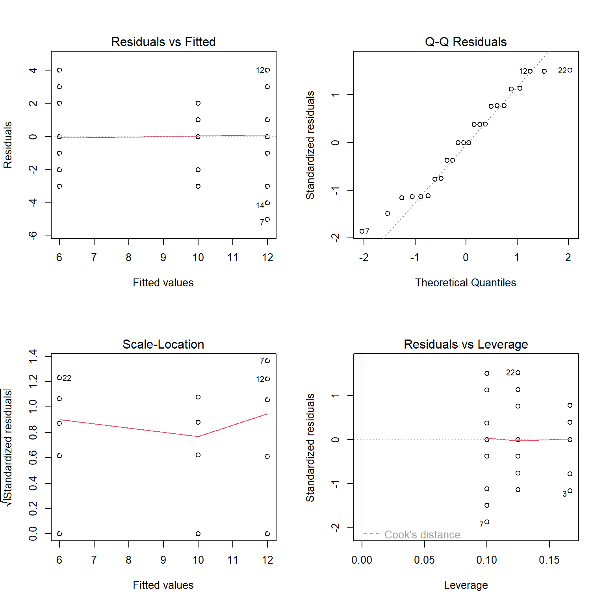
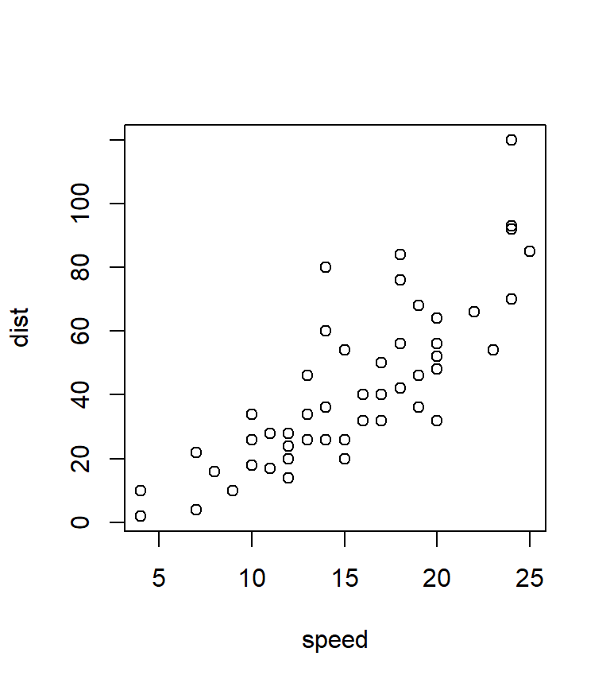
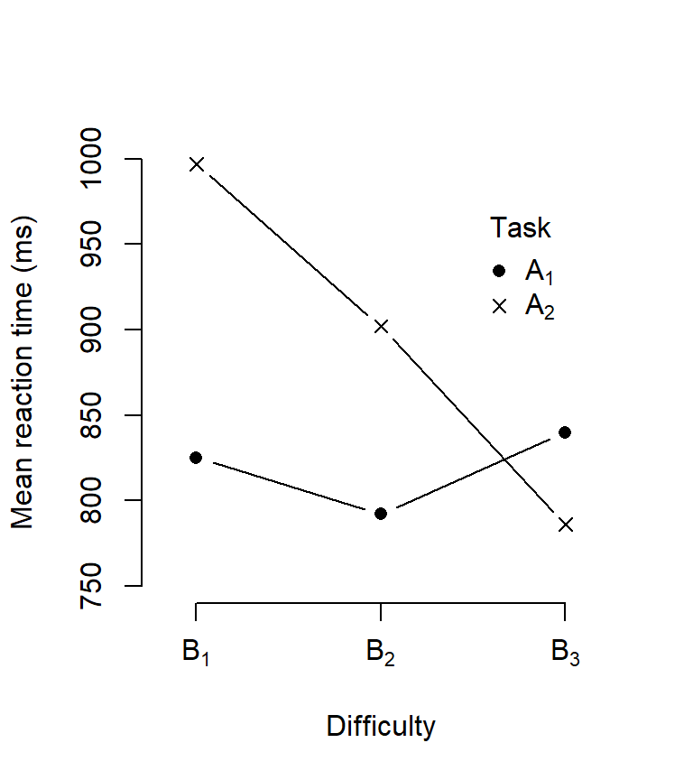
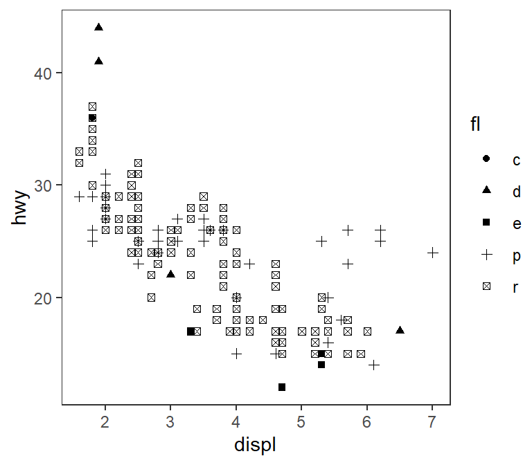
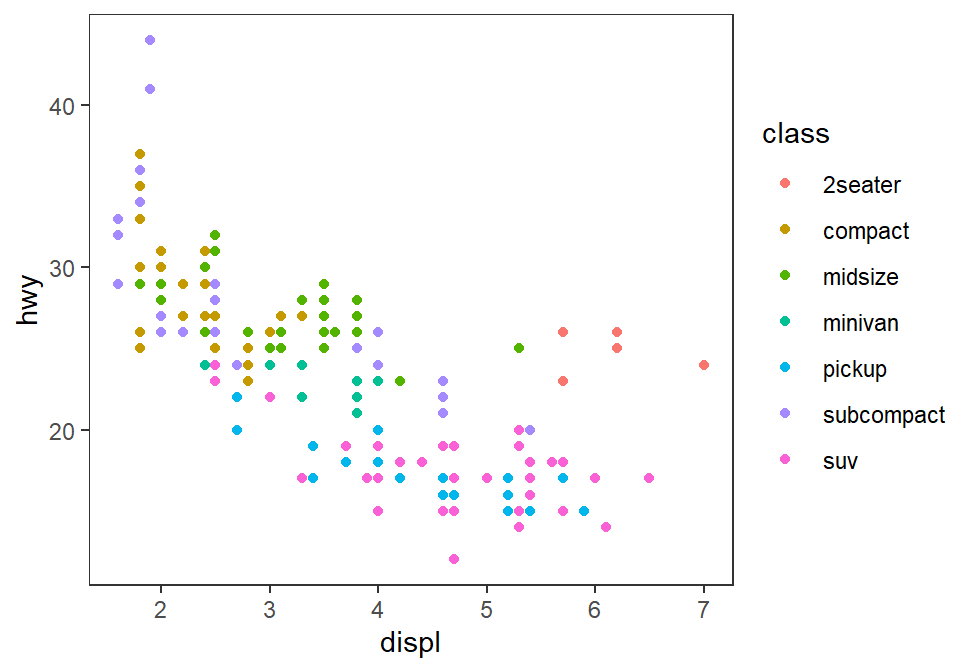
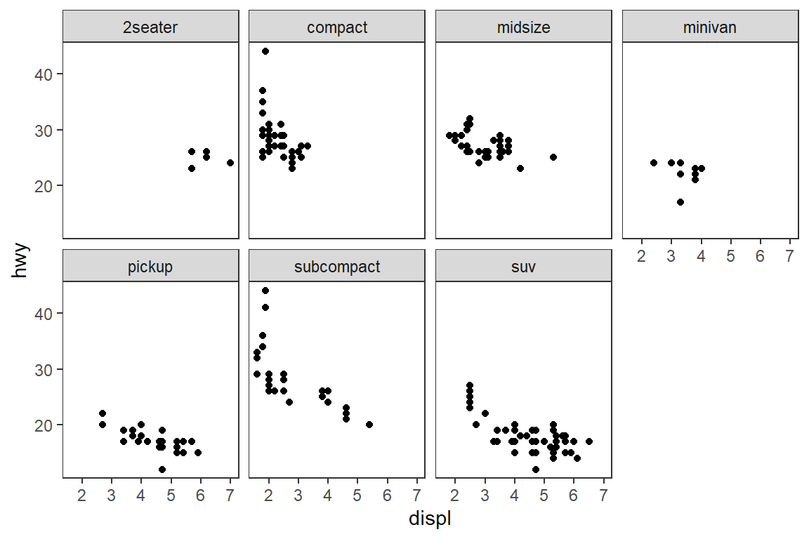
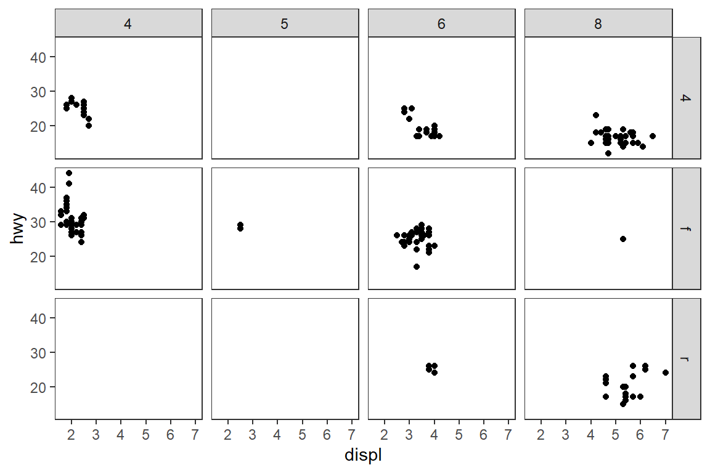
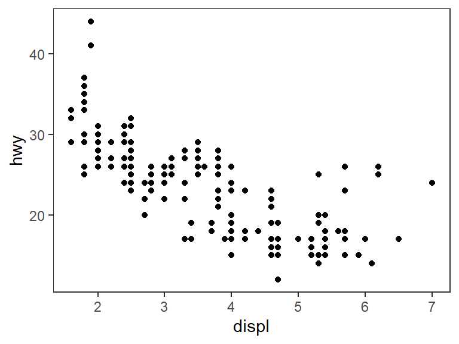
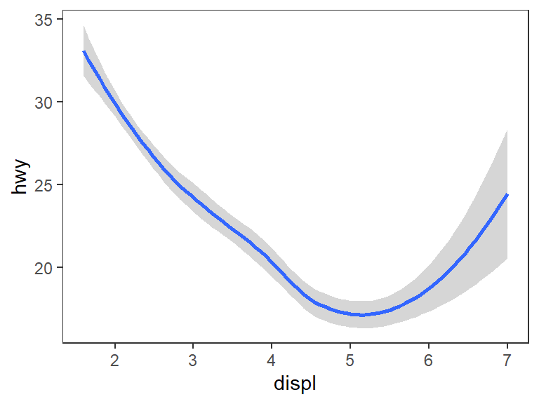

Chapter 3 Day 2
3.1 Simple data analysis in R
R is a free software environment for statistical computing and graphics.
The stats package, which is automatically loaded when R starts up, contains
functions for statistical calculations and random number generation. For a
complete list of functions, see library(help = stats).
3.1.1 t tests
# One-sample t test
rt <- rnorm(100, mean = 400, sd = 20)
t.test(rt, mu = 400)##
## One Sample t-test
##
## data: rt
## t = -1.701, df = 99, p-value = 0.09208
## alternative hypothesis: true mean is not equal to 400
## 95 percent confidence interval:
## 392.2731 400.5938
## sample estimates:
## mean of x
## 396.4334# Two-sample t test for independent groups
t.test(weight ~ group, PlantGrowth[PlantGrowth$group != "ctrl", ],
var.equal = TRUE)##
## Two Sample t-test
##
## data: weight by group
## t = -3.0101, df = 18, p-value = 0.007518
## alternative hypothesis: true difference in means between group trt1 and group trt2 is not equal to 0
## 95 percent confidence interval:
## -1.4687336 -0.2612664
## sample estimates:
## mean in group trt1 mean in group trt2
## 4.661 5.526# Two-sample t test for dependent groups
t.test(extra ~ group, sleep, paired = T)##
## Paired t-test
##
## data: extra by group
## t = -4.0621, df = 9, p-value = 0.002833
## alternative hypothesis: true mean difference is not equal to 0
## 95 percent confidence interval:
## -2.4598858 -0.7001142
## sample estimates:
## mean difference
## -1.583.1.2 Linear models
Let us first fit a simple linear regression.
dat <- data.frame(
x = c(18, 23, 25, 35, 65, 54, 34, 56, 72, 19, 23, 42, 18, 39, 37),
y = c(202, 186, 187, 180, 156, 169, 174, 172, 153, 199, 193, 174, 198, 183, 178)
)
lm1 <- lm(y ~ x, dat)
plot(y ~ x, dat)
abline(lm1)
coef(lm1)## (Intercept) x
## 210.0484584 -0.7977266predict(lm1)## 1 2 3 4 5 6 7 8 9 10
## 195.6894 191.7007 190.1053 182.1280 158.1962 166.9712 182.9258 165.3758 152.6121 194.8917
## 11 12 13 14 15
## 191.7007 176.5439 195.6894 178.9371 180.5326resid(lm1)## 1 2 3 4 5 6 7 8
## 6.3106197 -5.7007474 -3.1052943 -2.1280287 -2.1962317 2.0287761 -8.9257552 6.6242292
## 9 10 11 12 13 14 15
## 0.3878543 4.1083463 1.2992526 -2.5439427 2.3106197 4.0628776 -2.5325755names(lm1)## [1] "coefficients" "residuals" "effects" "rank" "fitted.values"
## [6] "assign" "qr" "df.residual" "xlevels" "call"
## [11] "terms" "model"summary(lm1)##
## Call:
## lm(formula = y ~ x, data = dat)
##
## Residuals:
## Min 1Q Median 3Q Max
## -8.9258 -2.5383 0.3879 3.1867 6.6242
##
## Coefficients:
## Estimate Std. Error t value Pr(>|t|)
## (Intercept) 210.04846 2.86694 73.27 < 2e-16 ***
## x -0.79773 0.06996 -11.40 3.85e-08 ***
## ---
## Signif. codes: 0 '***' 0.001 '**' 0.01 '*' 0.05 '.' 0.1 ' ' 1
##
## Residual standard error: 4.578 on 13 degrees of freedom
## Multiple R-squared: 0.9091, Adjusted R-squared: 0.9021
## F-statistic: 130 on 1 and 13 DF, p-value: 3.848e-08# model diagnostics
par(mfrow = c(2, 2))
plot(lm1)
3.1.3 Analysis of Variance (ANOVA)
An ANOVA is just a special case of a regression where all predictors are
categorical. Using the function aov() instead of lm() gives us
different results for the extractor functions.
dat <- read.table(text = "
id group score
1 control 8
2 control 12
3 control 7
4 control 10
5 control 11
6 control 12
7 pro 7
8 pro 9
9 pro 15
10 pro 13
11 pro 11
12 pro 16
13 pro 12
14 pro 8
15 pro 13
16 pro 16
17 contra 4
18 contra 5
19 contra 6
20 contra 3
21 contra 8
22 contra 10
23 contra 3
24 contra 9
", header = TRUE)
aov1 <- aov(score ~ group, data = dat)
summary(aov1)## Df Sum Sq Mean Sq F value Pr(>F)
## group 2 162 81 10.12 0.000834 ***
## Residuals 21 168 8
## ---
## Signif. codes: 0 '***' 0.001 '**' 0.01 '*' 0.05 '.' 0.1 ' ' 1We can again look at the model diagnostics.
# model diagnostics
par(mfrow = c(2, 2))
plot(aov1)
3.2 Plotting
There are two graphics systems in R
- Traditional graphics
- Grid graphics
3.2.1 Traditional plots
plot(cars)
Stepwise plotting – first example:
dat <- read.table(header = TRUE, text = "
A B rt
a1 b1 825
a1 b2 792
a1 b3 840
a2 b1 997
a2 b2 902
a2 b3 786
", stringsAsFactors = TRUE)
plot(rt ~ as.numeric(B), dat, type = "n", axes = FALSE, xlim = c(.8, 3.2),
ylim = c(750, 1000), xlab = "Difficulty", ylab = "Mean reaction time (ms)")
# Plot the data points separately for each level of factor A.
points(rt ~ as.numeric(B), dat[dat$A == "a1", ], type = "b", pch = 16)
points(rt ~ as.numeric(B), dat[dat$A == "a2", ], type = "b", pch = 4)
# Add axes and a legend.
axis(side = 1, at = 1:3, expression(B[1], B[2], B[3]))
axis(side = 2)
legend(2.5, 975, expression(A[1], A[2]), pch = c(16, 4), bty = "n",
title = "Task")
Second example:
plot(Sepal.Length ~ Sepal.Width, iris, axes = FALSE, type = "n",
xlab = "Sepal width", ylab = "Sepal Length")
points(Sepal.Length ~ Sepal.Width, subset(iris, iris$Species == "setosa"),
col = "magenta", pch = 21)
points(Sepal.Length ~ Sepal.Width, subset(iris, iris$Species == "versicolor"),
col = "red", pch = 22)
points(Sepal.Length ~ Sepal.Width, subset(iris, iris$Species == "virginica"),
col = "purple", pch = 23)
axis(1)
axis(2)
legend("topleft", c("setosa", "versicolor", "virginica"),
pch = 21:23, col = c("magenta", "red", "purple"), bty = "n")
lm1 <- lm(Sepal.Length ~ Sepal.Width, subset(iris, iris$Species == "setosa"))
lm2 <- lm(Sepal.Length ~ Sepal.Width, subset(iris, iris$Species == "versicolor"))
lm3 <- lm(Sepal.Length ~ Sepal.Width, subset(iris, iris$Species == "virginica"))
abline(lm1, col = "magenta")
abline(lm2, col = "red")
abline(lm3, col = "purple")
3.2.2 Lattice plots
The lattice package implements Trellis plots in R. These are plots conditional on other variables. They are perfectly suited for visualizing complex relationships.
library(lattice)
states <- data.frame(state.x77, state.name = state.name,
state.region = state.region) # built-in data sets
xyplot(Murder ~ Population | state.region, states)xyplot(Sepal.Length ~ Sepal.Width, iris, groups = Species,
type = c("p", "r"), auto.key = TRUE)
Other example to “quickly” look at data:
xyplot(weight ~ Time | Diet, ChickWeight, groups = Chick,
type = c("g", "p", "r"))
3.2.3 The Grammar of Graphics ggplot2
R has very powerful graphics function. Creating beautiful (publication
ready) plots might be one of the best reasons to learn R. The R package
ggplot2 gives you endless possibilities. In recent years it has become
the state of the art way to create plots in R. It has a steeper learning
curve than the functions above (and I recommend to get some knowledge about
them, too, so you understand how plotting in R works), but it is well worth
the effort to invest some time. A good place to start are the following
(online) books:
- Chang, W. (2018). R graphics cookbook: practical recipes for visualizing data. O’Reilly Media. https://r-graphics.org/
- Wickham, H. (2016). ggplot2: elegant graphics for data analysis Springer-Verlag New York. https://ggplot2-book.org/
The grammar of graphics has a simple structure
ggplot(data = <DATA>) +
<GEOM_FUNCTION>(
mapping = aes(<MAPPINGS>),
stat = <STAT>,
position = <POSITION>
) +
<COORDINATE_FUNCTION> +
<FACET_FUNCTION># load package
library(ggplot2)
# load data
data(mpg)
# ?mpg
mpg## # A tibble: 234 × 11
## manufacturer model displ year cyl trans drv cty hwy fl class
## <chr> <chr> <dbl> <int> <int> <chr> <chr> <int> <int> <chr> <chr>
## 1 audi a4 1.8 1999 4 auto(l5) f 18 29 p compact
## 2 audi a4 1.8 1999 4 manual(m5) f 21 29 p compact
## 3 audi a4 2 2008 4 manual(m6) f 20 31 p compact
## 4 audi a4 2 2008 4 auto(av) f 21 30 p compact
## 5 audi a4 2.8 1999 6 auto(l5) f 16 26 p compact
## 6 audi a4 2.8 1999 6 manual(m5) f 18 26 p compact
## 7 audi a4 3.1 2008 6 auto(av) f 18 27 p compact
## 8 audi a4 quattro 1.8 1999 4 manual(m5) 4 18 26 p compact
## 9 audi a4 quattro 1.8 1999 4 auto(l5) 4 16 25 p compact
## 10 audi a4 quattro 2 2008 4 manual(m6) 4 20 28 p compact
## # ℹ 224 more rows3.2.3.1 Some examples
# start your plot with coordinate system
ggplot(data = mpg) +
geom_point(mapping = aes(x = displ, y = hwy)) + # then add layers
theme_bw() # and a theme
# even more information
ggplot(data = mpg) +
geom_point(mapping = aes(x = displ, y = hwy, shape = fl))
What is the difference between these plots?
ggplot(data = mpg) +
geom_point(mapping = aes(x = displ, y = hwy, color = class))
ggplot(data = mpg) +
geom_point(mapping = aes(x = displ, y = hwy), color = "blue")
What happens when we do this?
ggplot(data = mpg) +
geom_point(mapping = aes(x = displ, y = hwy, color = "blue"))
3.2.3.2 Facets
- Way to visualize additional variables
- Split plot into several facets
- Usually only meaningful for categorical variables
- Used with R’s formula notation
y ~ x
# one variable
ggplot(data = mpg) +
geom_point(mapping = aes(x = displ, y = hwy)) +
facet_wrap(~ class, nrow = 2)
# two variables
ggplot(data = mpg) +
geom_point(mapping = aes(x = displ, y = hwy)) +
facet_grid(drv ~ cyl)
3.2.3.3 Geometric objects
- A
geomis the geometrical object that a plot uses to represent data - For example bar charts, box plots, line charts, …
- Every
geomfunction takes amappingargumentggplot2provides over 40geoms, and extension packages provide even more (see https://exts.ggplot2.tidyverse.org/gallery/ for a sampling)
# scatter plot
ggplot(data = mpg) +
geom_point(mapping = aes(x = displ, y = hwy))
# fitted line
ggplot(data = mpg) +
geom_smooth(mapping = aes(x = displ, y = hwy))## `geom_smooth()` using method = 'loess' and formula = 'y ~ x'
# add another variable
ggplot(data = mpg) +
geom_smooth(mapping = aes(x = displ, y = hwy, linetype = drv))## `geom_smooth()` using method = 'loess' and formula = 'y ~ x'
# more layers: points and regression lines
ggplot(mpg) +
geom_point(aes(x = displ, y = hwy, color = drv)) +
geom_smooth(aes(x = displ, y = hwy, color = drv), method = "lm")## `geom_smooth()` using formula = 'y ~ x'